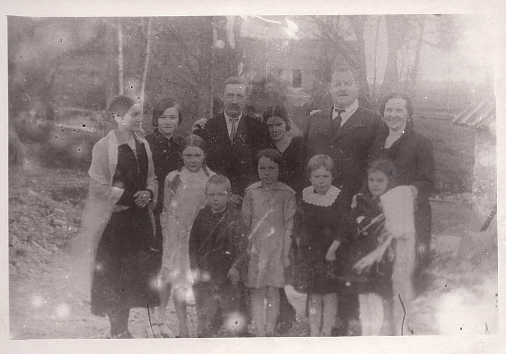
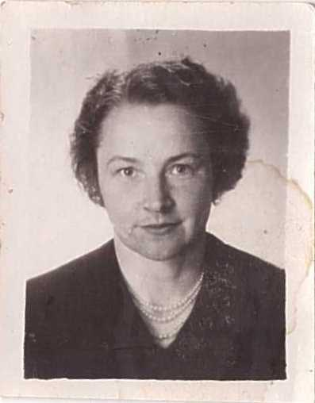
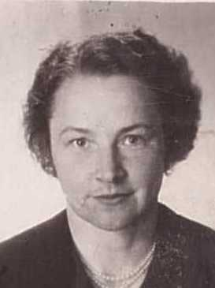
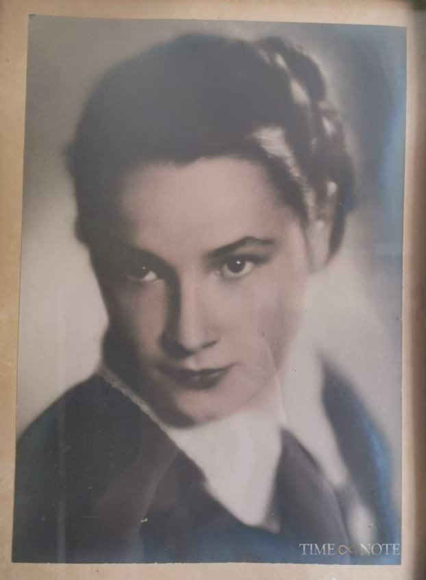

Aina Modrīte Sirlaka 1920–2003
Peter's first cousin twice removed.
Also recorded as Aina Jurciņa; Aina (Modrīte) Sirlaks.
Aina Modrīte Sirlaka was born on 1 Dec 1920 in Vīstuči farm, Jaunrauna, Rauna, Cēsis district, Vidzeme, Latvia2,3,4,5, the daughter of Dāvis Sirlaks and Alma Leontīne Āboltiņa3,4,17. She married Alberts Jurciņš in 1942 in Zvirgzdiņi, Jaungulbene, Vidzeme, Latvia4,18. She died on 18 Mar 20033 and was buried at Gulbene Old Cemetery, Gulbene, Vidzeme, Latvia3,14.
Family
- Parents
- Dāvis Sirlaks 1886–1952 and Alma Leontīne Āboltiņa 1887–1959 documented
- Husband
- Alberts Jurciņš 1916–1953 · married in 1942 in Zvirgzdiņi, Jaungulbene, Vidzeme, Latvia4,18
- Children
- Valdis Jurciņš 1947–2019 documented
- Alfrēds Jurciņš b. 1951 documented
Life events
| Event | Date | Place and details |
|---|---|---|
| Note | bet 1920 and 18 Mar 2003 | Gulbene Old Cemetery, Gulbene, Vidzeme, Latvia Identity of the memoirist. Timenote (nekropole.info) memorial pages give Aina Jurciņa, maiden name Sirlaka, born 1920, died 18 March 2003, buried in the Gulbene Old Cemetery. They name her father Dāvis Sirlaks (1886–1952) and mother Alma (1887–1959); her husband Alberts Jurciņš (b. 14 Dec 1916, d.…3 |
| Born | 1 Dec 1920 | Vīstuči farm, Jaunrauna, Rauna, Cēsis district, Vidzeme, Latvia2,3,4,5 |
| Education | 1940 | Priekuļi, Cēsis district, Vidzeme, Latvia Dievbērns school (head Kārlis Dievabērns), Rauna parish school, then Priekuļi Agricultural Secondary School, graduated 1940 (exile alumni album "Priekulieši" mentions her, p. 32). Confirmation instruction with Pastor Arvīds Treicis, Rauna, 1940 (p. 31).10 |
| Note | 1940 | Rauna, Cēsis district, Vidzeme, Latvia Confirmation instruction and confirmation at Rauna church (p. 11: "Manā iesvētīšanas dienā Raunas baznīcā"), pastor Arvīds Treicis.15 |
| Lived | bet 1942 and 1953 | Jaungulbene, Vidzeme, Latvia6 |
| Married | 1942 | with Alberts Jurciņš Zvirgzdiņi, Jaungulbene, Vidzeme, Latvia4,18 |
| Banns read | Apr 1942 | with Alberts Jurciņš St Anne's church, Jelgava, Kurzeme (Courland), Latvia19 |
| Lived | 1944 | Zvirgzdiņi, Jaungulbene, Vidzeme, Latvia7 |
| Work | bet 1945 and 1980 | Kolkhoz worker (she "fled from the kolkhoz" to the Jaunpiebalga seed-control laboratory, p. 43); clerk at the Dauksti village soviet, Gulbene district; research assistant (probably Priekuļi Selection Station); amateur theatre director. Widowed 1953.11 |
| Lived | bet 1953 and 1973 | Jaunpiebalga, Cēsis district, Vidzeme, Latvia8 |
| Lived | 22 Oct 1998 | Priekuļi, Cēsis district, Vidzeme, Latvia9 |
| Died | 18 Mar 2001 | 4,12,13 |
| Died | 18 Mar 2003 | Preferred version: Timenote gives a full date and her grave at Gulbene Old Cemetery. 2001 (same day, 18 March) comes from a pen addition in the family copy of her memoir and from Voronins's tree, which may share one source. Kept open: the gravestone decides.3 |
| Buried | Gulbene Old Cemetery, Gulbene, Vidzeme, Latvia3,14 | |
| Note | LEAD (S): Aina’s death year: 2001 (memoir pen note, Voroņins tree) vs 2003 (Timenote). Reopen lead aina-death-year.16 |
Possible records (not confirmed)
Records that may concern her, but don't settle it: an initial and a surname only, a family recollection, or a reading that needs a second look. Each links to the record.
- Other: LEAD (W): Vladimirs Kuģenieks (d. Nov/Dec 1953), Aina’s other suitor; V. Kuģenieks made the Vīstuči sign in 1941; Valdis visited "Kuģenieks" while in the Legion (p. 2).20 Would be settled by: Not kin; low priority.
- Other: LEAD (W): The 1942 wedding itself: banns at Jelgava St Anne’s (Zemgale, 21 Apr 1942), yet the couple lived at Zvirgzdiņi, Jaungulbene. Where and when was the marriage solemnised?20 Would be settled by: Jelgava St Anne’s marriage register 1942; Jaungulbene parish register; civil marriage register 1942.
- Other: LEAD (W): "Priekulieši", an exile album of Priekuļi school alumni (class of 1940), which mentions Aina; may hold classmates’ notes on the family.20 Would be settled by: Library catalogue (LNB) for "Priekulieši".
Photographs



Records

Open questions
Sources
- MyHeritage family tree 'Dzimta' of Peter's third cousin (his family site), member GEDCOM export of 26 Oct 2026, I58 (person-6000058), GEDCOM lines 2461–2505.
NAME Aina (Modrīte) /Sirlaks/
- Ainas Sirlakas atmiņas ("Vīstuči"), Aina Jurciņa née Sirlaka, Priekuļi, 1998, pp. 22, 35, section "LEJAS VĪSTUČOS SAVU DZIMTAS KOKU IESTĀDA MĀRČA MAZDĒLS DAVIDS".
Aina Sirlaka 1920. 1.XII … Aina Sirlaka, dz. 1920. 1. decembrī
Translation: Aina Sirlaka, 1 XII 1920 … Aina Sirlaka, b. 1 December 1920
The author. Born at Vīstuči in the one room of the old house (p. 25). Godmother: her grandmother Dārta Āboltiņa/Āboliņa (p. 26). Had rickets as an infant.
- Aina Jurciņa, timenote person id 11610902.
Dzimšanas datums: 00.00.1920 Miršanas datums: 18.03.2003 … Pirmslaulību (cits) uzvārds: Sirlaka … Kapsēta: Gulbene, Vecie kapi … Dāvis Sirlaks — Tēvs — 1886–1952; Alma Sirlaka — Māte — 1887–1959; Valdis Jurciņš — Dēls — 04.03.1947–04.09.2019; Alberts Jurciņš — Vīrs — 14.12.1916–1953
Translation: Born 1920, died 18 Mar 2003; maiden name Sirlaka; cemetery Gulbene Old Cemetery; father Dāvis Sirlaks (1886–1952), mother Alma Sirlaka (1887–1959), son Valdis Jurciņš (1947–2019), husband Alberts Jurciņš (1916–1953)
Identity of the memoirist. Timenote (nekropole.info) memorial pages give Aina Jurciņa, maiden name Sirlaka, born 1920, died 18 March 2003, buried in the Gulbene Old Cemetery. They name her father Dāvis Sirlaks (1886–1952) and mother Alma (1887–1959); her husband Alberts Jurciņš (b. 14 Dec 1916, d. 1953); her son Valdis Jurciņš (4 Mar 1947 – 4 Sep 2019, also Gulbene); her sisters Velta Grīslis (1918–2015) and Ilga Stangaine (1922–2011); and her brothers Valdis Sirlaks (1924–1995) and Jānis (1916–1918). So Aina is Elvīra's first cousin through Dāvis of Vīstuči, exactly as Raimonds said ('Elvīras māsīca'). Her married name JURCIŅA is the name to search in catalogues; the memoir is probably an unpublished family typescript held by her descendants (Jurciņš family, Gulbene) or by Raimonds.
- Raimonds Voronins, family tree shared on FamilyTreeDNA (Sirlaks / Gibboy lines), Dāvis Sirlaks family.
- MyHeritage family tree 'Dzimta' of Peter's third cousin (his family site), member GEDCOM export of 26 Oct 2026, I58 (person-6000058), GEDCOM lines 2461–2505.
BIRT · 1 DEC 1920 · Vīstuči, Jaunrauna
- Aina Jurciņa at Zvirgzdiņi in Jaungulbene parish (1942–1953).
1942.gadā ieprecējās skolas prakses saimniecībā Gulbenes rajona “Zvirgzdiņos”. … Kad ieprecējos priekšzīmīgajos Jaungulbenes "Zvirgzdiņos" … Aina Sirlaka, dz. 1920. 1. decembrī / Alberts Jurciņš, dz. 1916. 14. decembrī / Bērni: Valdis, dz. 1947 / Alfrēds, dz. 1951
Married Alberts Jurciņš in 1942 and moved with her dowry to his father's model farm 'Zvirgzdiņi' in Jaungulbene parish, where their sons Valdis (born 1947) and Alfrēds (born 1951) were born and where Alberts died in late 1953.
- Ainas Sirlakas atmiņas ("Vīstuči"), Aina Jurciņa née Sirlaka, Priekuļi, 1998, p. 37, section "KO ZINU PAR KARA LAIKU VĪSTUČOS".
Mēs, Gulbenes "Zvirgzdiņu" ļaudis, vāciešu no mājas izdzīti, ar diviem zirgu vezumiem bēgļu straumē nokļuvām līdz Mazstraupei.
Translation: We, the people of "Zvirgzdiņi" in Gulbene, driven from home by the Germans, reached Mazstraupe with two horse-loads in the stream of refugees.
Flight of 1944 with the Jurciņš household; "Viss iet bojā" (everything was lost, p. 32). They stayed in Latvia. In the last war winter (1944–45) she worked at the Priekuļi school with teacher Jānis Ambainis (p. 36).
- Aina Jurciņa working in Jaunpiebalga.
Kad es aizbēgu no kolhoza, man līdz bija tikai skābu kāpostu spainītis un maisiņš, kur iebāzt salmus gulēšanai. Šo maisiņu noliku uz krēsliem aiz drēbju pakaramiem Jaunpiebalgas sēklu kontroles laboratorijas priekšistabā.
After her husband Alberts's death, she left the kolkhoz at Jaungulbene to work and sleep in the anteroom of the Jaunpiebalga seed-testing laboratory (where her sister Ilga Stangaine lived) before moving to Priekuļi.
- Ainas Sirlakas atmiņas ("Vīstuči"), Aina Jurciņa née Sirlaka, Priekuļi, 1998, p. 53, section "NOBEIGUMS".
Priekuļos, 1998.gada 22.oktobrī
Translation: Priekuļi, 22 October 1998
Lived in Priekuļi when she finished the memoir (also p. 27 "Te, Priekuļos"). The frame conversation with Ilga is dated 5 June 1998 (p. 2).
- Ainas Sirlakas atmiņas ("Vīstuči"), Aina Jurciņa née Sirlaka, Priekuļi, 1998, pp. 29, 30, section "VĪSTUČU BĒRNI IET SKOLĀ".
Visi četri mēs esam gājuši tā sauktā Dievbērnskolā. … Aina iestājās Priekuļu Lauksaimniecības vidusskolā, kuru sekmīgi absolvēja 1940.gadā.
Translation: All four of us went to the so-called Dievbērns school. … Aina entered the Priekuļi Agricultural Secondary School and graduated successfully in 1940.
Dievbērns school (head Kārlis Dievabērns), Rauna parish school, then Priekuļi Agricultural Secondary School, graduated 1940 (exile alumni album "Priekulieši" mentions her, p. 32). Confirmation instruction with Pastor Arvīds Treicis, Rauna, 1940 (p. 31).
- Ainas Sirlakas atmiņas ("Vīstuči"), Aina Jurciņa née Sirlaka, Priekuļi, 1998, pp. 32, 24, 43, section "DĀVJA UN ALMAS TREŠĀ BĒRNA AINAS DZĪVES GAITA".
Kolhozā. Zinātnē. strādnieks. Zinātnieka labā roka. Režisors. … Strādāju Daukstu ciema … padomē. … Kad es aizbēgu no kolhoza
Translation: In the kolkhoz. In science: a worker, a scientist's right hand. A [theatre] director. … I worked at the Dauksti village soviet. … When I fled from the kolkhoz
Kolkhoz worker (she "fled from the kolkhoz" to the Jaunpiebalga seed-control laboratory, p. 43); clerk at the Dauksti village soviet, Gulbene district; research assistant (probably Priekuļi Selection Station); amateur theatre director. Widowed 1953.
- Ainas Sirlakas atmiņas ("Vīstuči"), Aina Jurciņa née Sirlaka, Priekuļi, 1998, p. 22, section "LEJAS VĪSTUČOS SAVU DZIMTAS KOKU IESTĀDA MĀRČA MAZDĒLS DAVIDS".
Aina Sirlaka 1920. 1.XII [handwritten: -2001. 18.III]
Translation: Aina Sirlaka, 1 XII 1920 [pen: – 18 III 2001]
Death date added in pen to the family copy: 18 Mar 2001. Timenote has 18 Mar 2003 (same day and month); the Voroņins tree has 2001. Lead aina-death-year should be reopened.
- MyHeritage family tree 'Dzimta' of Peter's third cousin (his family site), member GEDCOM export of 26 Oct 2026, I58 (person-6000058), GEDCOM lines 2461–2505.
DEAT · 18 MAR 2001 · AGE 80
- MyHeritage family tree 'Dzimta' of Peter's third cousin (his family site), member GEDCOM export of 26 Oct 2026, I58 (person-6000058), GEDCOM lines 2461–2505.
BURI · Gulbenes kapos
- Ainas Sirlakas atmiņas ("Vīstuči"), Aina Jurciņa née Sirlaka, Priekuļi, 1998, p. 31, section "MĀCĪTĀJS ARVĪDS TREICIS".
Gāju pie viņa mācībā 1940.gadā 2 nedēļas.
Translation: I went to him [Pastor Treicis] for instruction in 1940, for 2 weeks.
Confirmation instruction and confirmation at Rauna church (p. 11: "Manā iesvētīšanas dienā Raunas baznīcā"), pastor Arvīds Treicis.
- Ainas Sirlakas atmiņas ("Vīstuči"), Aina Jurciņa née Sirlaka, Priekuļi, 1998, p. 22, section "LEJAS VĪSTUČOS SAVU DZIMTAS KOKU IESTĀDA MĀRČA MAZDĒLS DAVIDS".
[handwritten: -2001. 18.III]
Translation: [pen:] – 18.III.2001
LEAD (S): Aina’s death year: 2001 (memoir pen note, Voroņins tree) vs 2003 (Timenote). Reopen lead aina-death-year.
- Ainas Sirlakas atmiņas ("Vīstuči"), Aina Jurciņa née Sirlaka, Priekuļi, 1998, pp. 9, 21, 26, section "PAR PĒTERA UN MARIJAS PIEKTO BĒRNU DĀVIDU".
Viņiem ir pieci bērni: Jānis, Velta, Aina, Valdis, Ilga. … Mūsu vecākā māsa- 1918.gada septembrī. Mēs, pārējie trīs bērni, ik pēc 2 gadiem. … Mēs četri: Velta, Aina, Ilga, Valdis
Translation: They have five children: Jānis, Velta, Aina, Valdis, Ilga. … Our eldest sister, in September 1918. We, the other three children, every 2 years. … We four: Velta, Aina, Ilga, Valdis
Children: Jānis (1916–1918), Velta (1918), Aina (1920), Ilga (1922), Valdis (1924). p. 9 lists Valdis before Ilga, but the dated registers (pp. 22, 34) put Ilga first.
- Ainas Sirlakas atmiņas ("Vīstuči"), Aina Jurciņa née Sirlaka, Priekuļi, 1998, pp. 30, 32, 42, section "NĀKAMĀS VĪSTUČBĒRNU SKOLAS".
1942.gadā ieprecējās skolas prakses saimniecībā Gulbenes rajona “Zvirgzdiņos”. … Un Ainu reizē bildina divi godavīri: Vladimirs Kuģenieks, Alberts Jurciņš. … Viņi izvada Ainu tautās ar neredzētu pūru 1942.gadā.
Translation: In 1942 she married into the school's practice farm, "Zvirgzdiņi" in the Gulbene district. … And two honourable men courted Aina at once: Vladimirs Kuģenieks and Alberts Jurciņš. … They gave Aina away in marriage with an unheard-of trousseau in 1942.
Married Alberts Jurciņš in 1942 and moved to his family's model farm "Zvirgzdiņi" ("one of Latvia's 105 most exemplary farms"), Jaungulbene (p. 42: "Jaungulbenes “Zvirgzdiņos”"). Agrees with the banns at St Anne's, Jelgava (Zemgale, 21 Apr 1942; data/families/F1006.yaml). The wedding itself: groom's party "won" the money contest (p. 40).
- Jelgava: baznīcas ziņas, Zemgale, Nr.91 (21.04.1942), p. 7.
Annas draudzē kristīti: … Uzsaukti: Alberts Jurciņš ar Ainu Sirlaku
Translation: St Anne's congregation, baptised: … Banns: Alberts Jurciņš and Aina Sirlaka
Banns of Alberts Jurciņš and Aina Sirlaka at Jelgava St Anne's. (Recorded as a marriage until 2026-11-01: banns, not the wedding; they were read where one of the couple was registered, so Alberts or Aina belonged to St Anne's parish, Jelgava, in April 1942; the record does not say which.) This is the same church where Arvīds's banns had been read four months earlier. An 'Aina Sirlaka' also appears in a June 1940 Cēsu Vēstis list of agricultural-school graduates. NOT the Soviet-era philosopher Aina Jurciņa (wife of the poet Pēteris Jurciņš), who is a different person.
- S-aina-memoir-ainas-sirlakas-atminas-vistuci-aina-jurcina.